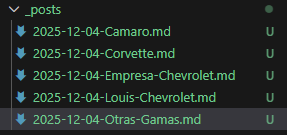
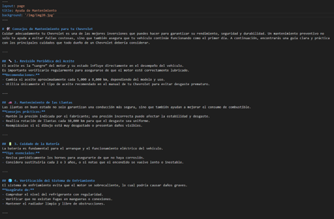
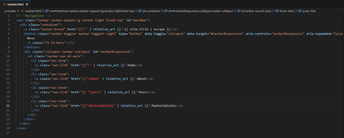
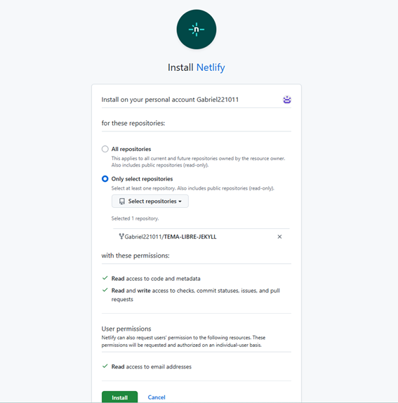
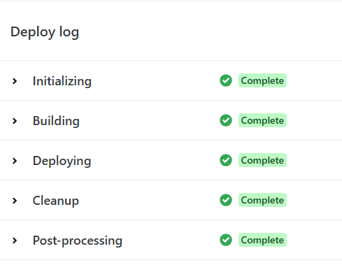

Importar, desplegar y configurar un tema libre en Netify App
Paso 1

Para empezar, debemos configurar el fichero "config.yml", una vez dentro modificamos varios campos como:
- El título del sitio web
- El email, pondemos nuestra cuenta de educantabria
- Una breve descripción de nuestro sitio
- El nombre del autor
- La baseurl del sitio web
- La url de nuestro perfil de GitHub
Los perfiles sociales no serán necesarios de concretar, pero nunca esta de más
Paso 2

Ahora como hemos hecho anteriormente pasamos a modificar el contenido de nuestro sitio web, creamos 5 posts relacionados con el tema de nuestro sitio web, en mi caso sobre Chevrolet

Aquí podemos ver los 5 posts, que aparecerán en el sitio web

Luego en el tema publicaciones, modificaremos el about.md y creamos otra página llamada Mantenimiento.md
Tampoco hace falta dedicarle mucho tiempo a la configuracion de la página ya que es lo mismo que en temas anteriores
Paso 3

Por último tenemos que configurar el fichero de la barra de navegación para que podramos tener en nuestra barra, la página de Mantenimiento. Tendremos que cambiar la url relativa

Al final comprobamos que el sitio web se despliega correctamente en jekyll
Paso 4

Aquí llegamos a lo nuevo, deberemos desplegar el sitio web en Netify App, en vez de jekyll, para eso deberemos de importar el repositorio de GitHub a Netify App

Ponemos un nombre al proyecto, que será importante para la url del sitio en Netify

Después de crearla se iniciará un proceso de creación del sitio web, cuando termine podremos desplegar el sitio en Netify

El sitio una vez desplegado debería de verse exactamente igual que en jekyll, solo deberia de cambiar la url del sitio web